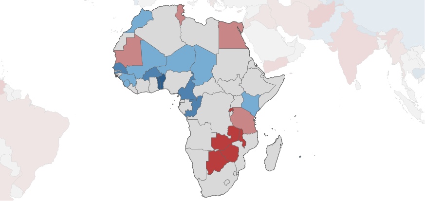
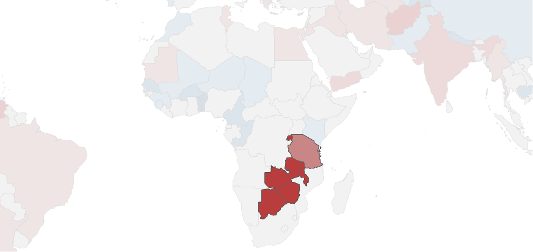
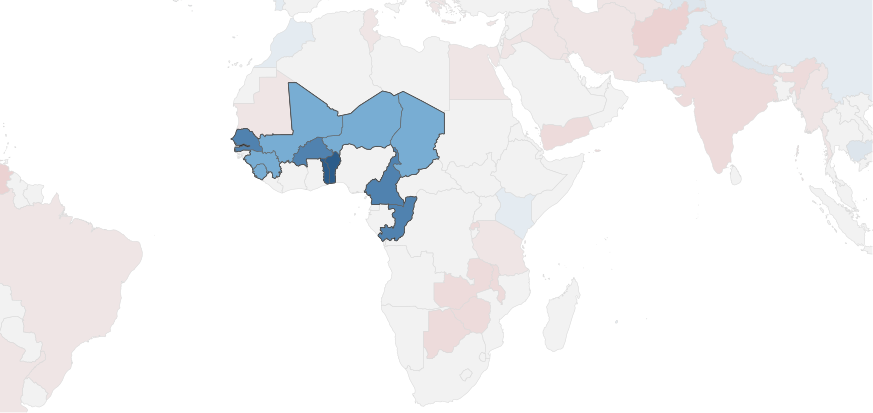
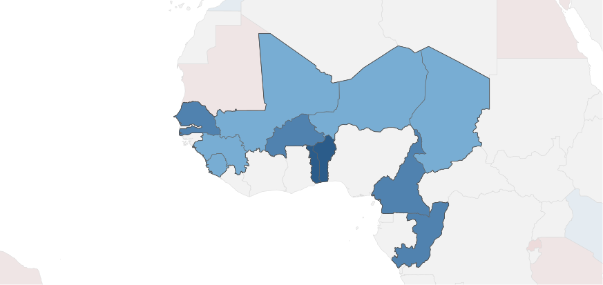
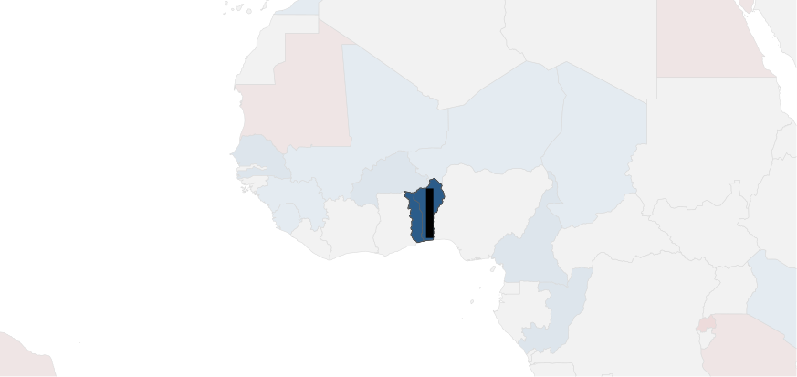
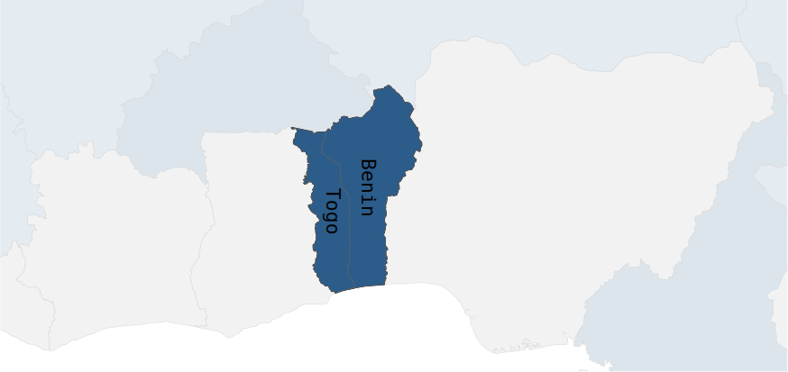
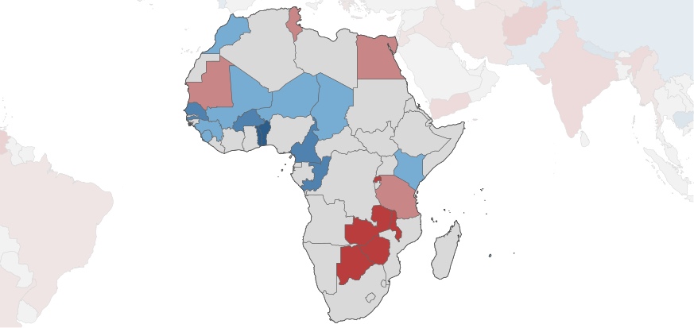
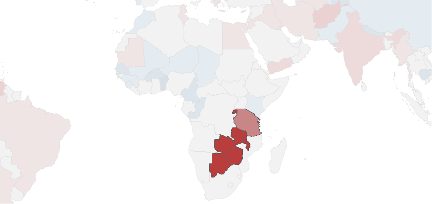
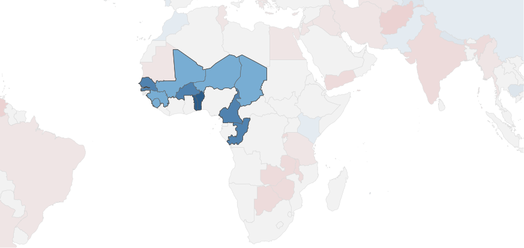
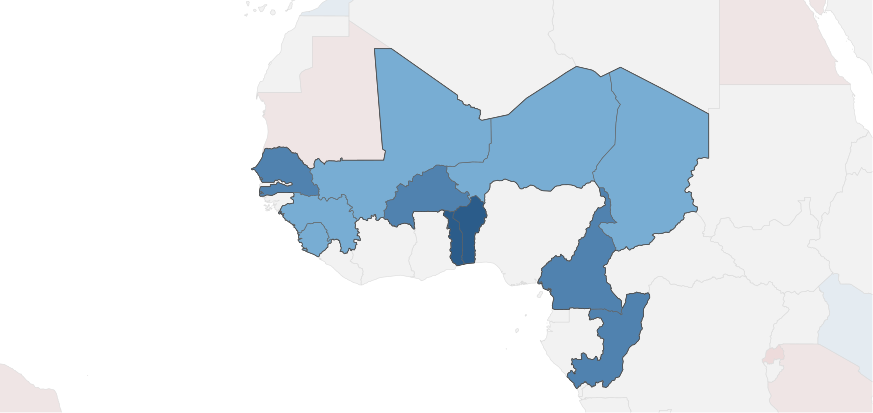
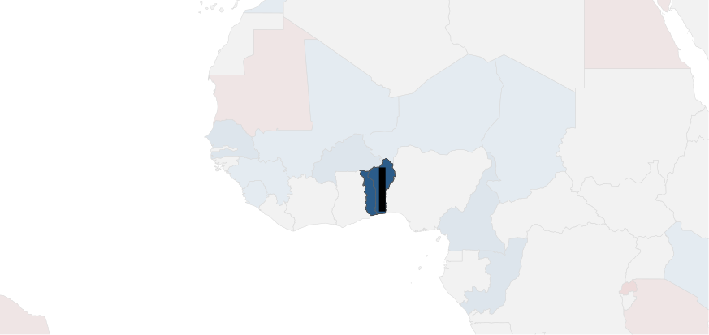
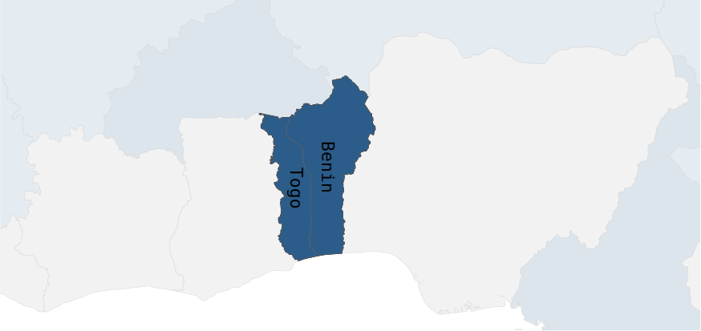
#1
#2
#3
#4
#5
#6
#7
In 2012, the United Nations published their first The World Happiness Report. Since then, updates to this report have analyzed data collected from 2005 to 2019 on happiness around the world.
This report highlights a continuing problem -- Some of the world's economic powerhouses, while increasing their Gross National Product (GNP), which is a measure of the dollar value of all the goods and services produced in a nation, show no significant increase in happiness.
For example, while the per-person GNP of the U.S. has increased three-fold over the previous half century, its inhabitants reported no significant change in happiness over that period. This massive increase in productivity, which continues to the present day, has come at a
major cost to the environment, but without actually the people of the U.S. any happier.
A possible way out of this destructive trend comes from the small nation of Bhutan, where in 1972, the nation's king committed his government to increasing what he termed
"Gross National Happiness."
The World Happiness report uses the Gallup World Poll, where respondents are asked to evaluate the quality of their lives on an ladder scale running
from 0 to 10, with the bottom rung of the ladder (0) being the worst possible life for them and 10 being the
best possible.
The story below highlights the nations where its people show significant changes in this self-evaluation of happiness.
#1
#2
#3
#4
#5
#6
#7